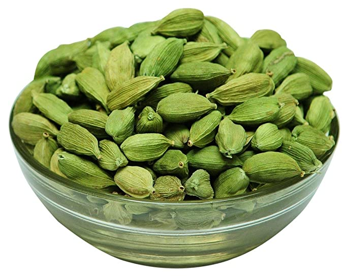
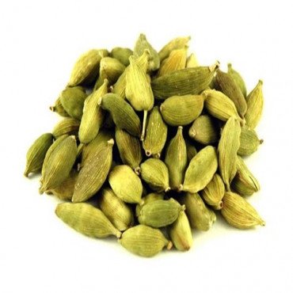

saraswati speices
CARDAMOM


Cardamom is a spice made from the seeds of several plants in the genera
Elettaria and Amomum in the family Zingiberaceae. Both genera are native
to the Indian subcontinent and Indonesia. They are recognized by their small
seed pods: triangular in cross-section and spindle-shaped, with a thin, papery
outer shell and small, black seeds; Elettaria pods are light green and smaller,
while Amomum pods are larer and dark brown.